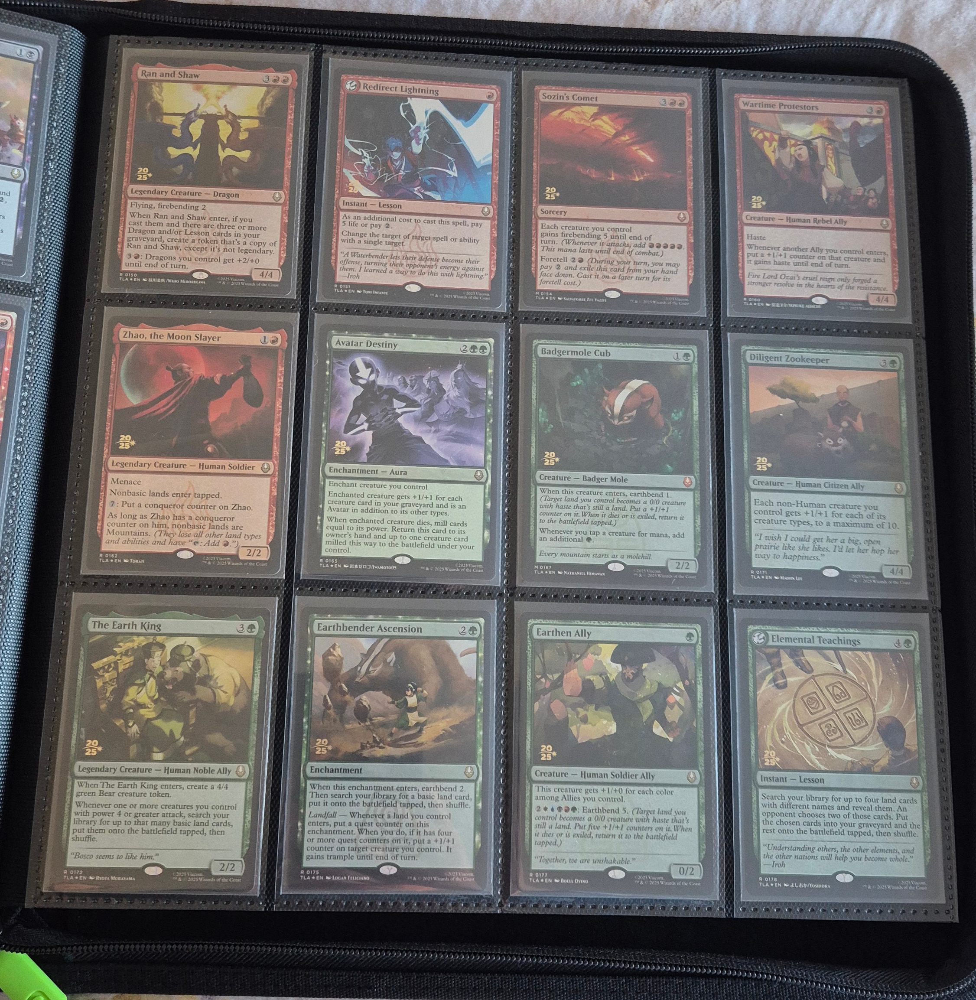
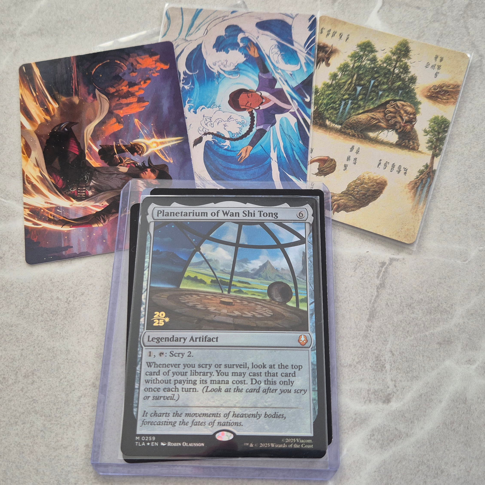
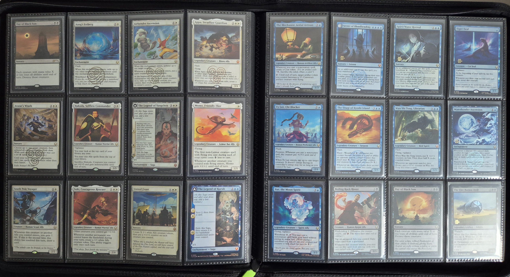

A Reflection
I mentioned back in April that I had ordered the final four prerelease stamp cards I was missing. The final card arrived on May 12, and I've been sitting at 80/80 ever since. It sounds a little underwhelming when stated so simply after so many months, but the arrival of the final few was anything but anticlimactic.
The four I was missing were those that simply refused to surface on Cardmarket: Fated Firepower, Fire Lord Azula, Redirect Lightning, and Planetarium of Wan Shi Tong. Each one was a serious pain in the neck.
Fated Firepower / Fire Lord Azula
Two prerelease mythics at the end is unsurprising. I'm still missing a lot of mythics from the TLA base set. What was surprising was surfacing a seller that had both this late in the game—I had expected to be buying individual singles to fill the remaining gaps. Tragically, the seller was a UK hobby shop that only shipped domestically. It was too good an opportunity to pass up; I was able to arrange a UK delivery address, and imported the two at a significant premium.
Redirect Lightning
Apparently this card is one of the most-played in Commander from the TLA set. No wonder then that this was the second-last prerelease card I needed. I eventually managed to find one for sale in Europe, but I had to resort to eBay. Looking at Cardmarket today, there are actually a lot of English-language listings, so maybe it was just a temporary supply drought. At any rate, I was glad to secure it at the time.
Planetarium of Wan Shi Tong
I don't know what it is about this card, but it eluded me for the longest time. I actually ordered a copy all the way back in March, but it disappeared in transit. The professional(!) seller tried refunding me only half the amount, requiring escalation to Cardmarket. Although Cardmarket resolved this dispute, the whole interaction left a bad taste in my mouth and caused a delay of over a month before I ordered another copy. This time, I paid for tracked postage. Its arrival marked the completion of my PTLA collection. What a journey it's been!


With the full prerelease run secured, I was free to pursue other parts of the collection. It's been an exciting summer of acquisitions, but that is a topic for another post. Hopefully the next few won't be quite as belated.

In other news, my Grandmaster Checklist tool is back down to 1,711 cards. User apturrubiates on Reddit correctly pointed out that there is no non-foil version of TLE #215. The only non-foil version of Katara, Heroic Healer is #269, the tutorial version. Hopefully that's all of them this time.